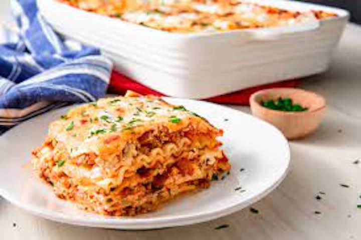

Lasagna

A Family Favorite
I don't think you're ready for this spaghetti, or lasagna rather. This is literally the best lasagna recipe that has ever existed. You'll be amazed at just how easy and delicious this recipe for lasagna is. Mama mia! That's a spicy meat sauce!
What You'll Need
- 1 pound of sweet Italian sausage
- 3/4 pound lean ground beef
- 1/2 cup minced onion
- 2 cloves of crushed garlic
- 1 can (28 oz) of crushed tomatoes
- 2 cans (6 oz) of tomato paste
- 2 cans (6.5 oz) of canned tomato sauce
- 1/2 cup of water
- 2 tablespoons white sugar
- 1.5 teaspoons dried basil leaves
- 1/2 teaspoon of fennel seeds
- 1 teaspoon of italian seasoning
- 1.5 teaspoons of salt, divided, or to taste
- 1/4 teaspoon of ground black pepper
- 4 tablespoons of chopped fresh parsley
- 12 lasagna noodles
- 16 oz of ricotta cheese
- 1 egg
- 3/4 pound of sliced mozzarella cheese
- 3/4 cup grated parmesan cheese
What to do
- In a Dutch oven, cook sausage, ground beef, onion, and garlic over medium heat until well browned. Stir in crushed tomatoes, tomato paste, tomato sauce, and water. Season with sugar, basil, fennel seeds, Italian seasoning, 1 teaspoon salt, pepper, and 2 tablespoons parsley. Simmer, covered, for about 1 1/2 hours, stirring occasionally.
- Bring a large pot of lightly salted water to a boil. Cook lasagna noodles in boiling water for 8 to 10 minutes. Drain noodles, and rinse with cold water. In a mixing bowl, combine ricotta cheese with egg, remaining parsley, and 1/2 teaspoon salt.
- Preheat oven to 375 degrees F (190 degrees C).
- To assemble, spread 1 1/2 cups of meat sauce in the bottom of a 9x13-inch baking dish. Arrange 6 noodles lengthwise over meat sauce. Spread with one half of the ricotta cheese mixture. Top with a third of mozzarella cheese slices. Spoon 1 1/2 cups meat sauce over mozzarella, and sprinkle with 1/4 cup Parmesan cheese. Repeat layers, and top with remaining mozzarella and Parmesan cheese. Cover with foil: to prevent sticking, either spray foil with cooking spray, or make sure the foil does not touch the cheese.
- Bake in preheated oven for 25 minutes. Remove foil, and bake an additional 25 minutes. Cool for 15 minutes before serving.
Home